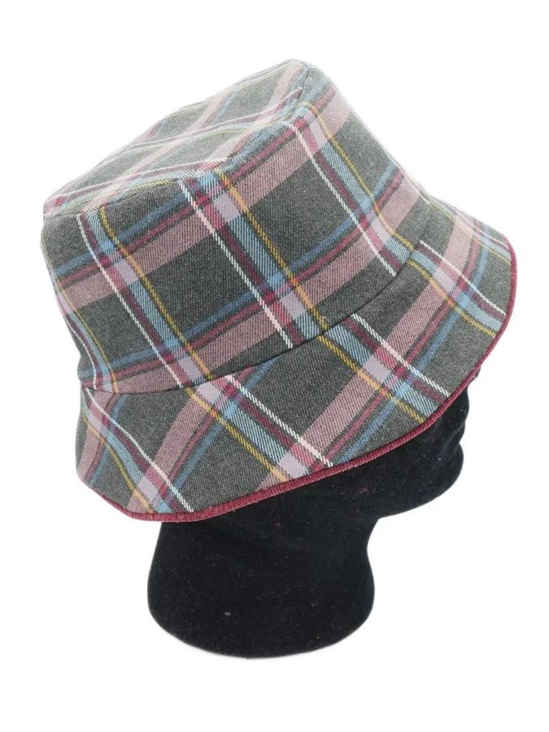

Bucket hat guide
A bucket hat is a hat with a narrow, downward-sloping brim. This guide explains the settings of the tool and my sewing choices: a reversible hat (a different fabric on each side), with a piping trim in a contrasting fabric and as few visible seams as possible. It is based on my videos: the links are given in each section.


The three pieces
The hat is made of three pieces: the top (the “crown”: a disc), the sidewall (the head circumference) and the brim. The sidewall and the brim are truncated cones. In my videos, “crown” means the sidewall and “top” the flat top.
Video: designs and patterns · Video: my bucket hats (characteristics)
The settings and their effects
The head circumference and the ease give the diameter of the hat at head level: allow 2 cm of ease, 4 cm at most depending on the hairstyle worn underneath. The larger the sidewall angle, the straighter the sides; the larger the sidewall width, the taller the hat. The top follows from the head circumference, the angle and the width of the sidewall: the cross-section shown on the page redraws at each change so you can see the effect of your choices. The larger the brim angle, the more the brim droops.
One or two pieces, visible seams
The outer and inner faces of the hat can each be designed in 1 or 2 pieces. In one piece, the sidewall and the brim have a single visible seam; with two pieces, two seams are visible. Usually a bucket hat has two: mine have only one on the sidewall and one on the brim, and none around the brim edge. The two-piece pattern is smaller, which can save fabric; the one-piece version is more elegant and better for large prints, but it uses more fabric. Sewing difficulty is the same.
Visible seams also depend on how the brim is assembled. In the “big ball” method, only the outside of the brim is sewn: the two faces of the brim are not attached, which lacks structure, and is usually compensated by topstitching around the brim. In the other method, you complete the brim first, sewing its inside as well, then sew it onto the two sidewalls. The piping does not change this process.
Fabrics, interfacing and cutting
Cut the pieces. Iron, then add interfacing if needed: it depends on the fabric, and is necessary when the fabric is too soft. Draw the pieces on the top fabric, then cut them with a rotary cutter. Make small cuts all around the pieces, in the seam allowance: they are a big help for the assembly.
Video: cutting, sewing and assembling
Piping
A piping trim is a narrow strip of fabric folded over a cord, for a touch of refinement. Ready-made ones are available; making your own lets you choose the colour and costs less, but takes more time. I prefer a contrasting colour, in a fabric robust enough to resist friction but not too thick, so that the piping stays discreet. I use a 2 mm elastic cord and a zipper foot.
Contrary to the usual advice, I cut the strip straight grain rather than on the bias: it saves fabric. Its length is the outer diameter of the brim plus a few cm; its width, 3 to 4 cm. Sew as close as possible to the cord, without rushing, then clip the piping.
Attach it to the outside of the first brim piece, starting the seam 2 cm from the brim seam and stopping 2 cm from it. To close the junction: cut the cord at the level of the brim seam, and the excess fabric; on the other side, also cut the cord at the seam (no overlap); fold the fabric inward to form a crease aligned with the seam, covering the excess, and sew the two ends.
Then add the second brim piece: the end seams of the two pieces must be opposite, which reduces thickness. Place the right side inside and the interfacing outside, and sew as close as possible to the cord; if a first pass is not close enough, do another. Iron to flatten the fabric near the piping. All that remains is to choose between two finishes: with or without stitches on the brim. I prefer to avoid visible stitches.
Joining the sidewall and the top
Sew the ends of the sidewall and brim pieces, then iron to flatten the seams. Assembly marks divide the circumference into quarters, and their number depends on the number of pieces: with one piece, 3 assembly marks per side (the 4th is the seam position); with two pieces, just one mark per side (the other marks are the seam positions). Pin the top to the sidewall, marks on marks first, then the intervals: the more pins the better. Matching the two pieces evenly is essential to avoid creases. A little ironing shapes the hat.
Assembling the brim, turning, closing
Clamp together the end seams of the brim and of the sidewall in the same fabric, then match the two pieces evenly. Sew one piece at a time: there are many layers (brim, sidewall 1 and sidewall 2). Sew the brim on the first sidewall, then the whole onto the second. Leave about 7 cm unsewn to turn the hat. Take the pins out, find the opening and turn the hat, starting with the brim and taking your time. The seams of each side must be opposite each other, to avoid overthickness. Iron on both sides. The opening is closed by sewing or gluing; as my hats are reversible, I prefer special fabric glue, which is more discreet, pinning while it dries.
Video: cutting, sewing and assembling
The videos are in English.